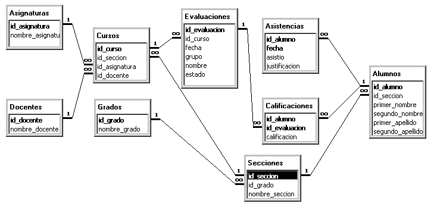

En este documento se presenta un análisis de los
requerimientos para un Sistema Automatizado de Soporte a la
Evaluación Continua para la U.E. Colegio La Salle -
La Colina.
La U.E. Colegio La Salle - La Colina mantiene un sistema de evaluación continua en el cual los docentes realizan evaluaciones frecuentes en cada asignatura. Para poder evaluar el rendimiento de los estudiantes y responder a las consultas hechas por los padres y representantes sobre el mismo es necesario consolidar la información de múltiples evaluaciones y múltiples asignaturas. Ese es un trabajo que en la actualidad consume una gran cantidad de recursos humanos.
Las Coordinación del Departamento de Evaluación y Control de Estudios de El Colegio ha solicitado nuestros servicios para el diseño e implantación de un sistema automatizado de soporte a la evaluación continua que cumpla con tres objetivos fundamentales:
Las siguientes secciones hacen un análisis detallado de los requerimientos del sistema.
Para cumplir con los objetivos generales, el sistema proveerá las siguientes interfases con el usuario y respectivos objetivos específicos.
El sistema deberá contar con una interfase para los docentes la cual permitirá a cada profesor:
El sistema deberá contar con una interfase solo accesible por el personal de Control de Estudios que permitirá:
El sistema podrá enviar a los padres o representantes de cada alumno, vía correo electrónico, un informe periódico sobre las calificaciones obtenidas por el alumno en cada asignatura.
El deberá proveer una interfase administrativa a ser usada al principio de cada año escolar para:
El sistema conservar la información de un año escolar que termina y permitir la incorporación de la información sobre el nuevo año escolar.
El sistema a desarrollar deberá cumplir con las siguientes restricciones:
El siguiente diagrama representa la estructura lógica de los datos que debe manejar por el sistema. Las cajas representan las entidades en el sistema, y las líneas las relaciones entre las entidades. El diagrama debe interpretarse de la siguiente manera:
Para hacer el gráfico más simple no se representaron los períodos ni los años, que también son entidades en el sistema, y mantienen las siguientes relaciones:

Esta sección presenta los aspectos contextuales de El Colegio que son relevantes a los requerimientos.
El sistema de apoyo a la evaluación continua se aplicará a los años de bachillerato: 7o, 8o, y 1o y 2o de diversificado. Para el año escolar 200-2001, la cantidad de docentes, alumnos, asignaturas, y cursos, eran aproximadamente las siguientes:
| Docentes | 36 |
| Asignaturas | 25 |
| Cursos (asignatura y sección) | 173 |
| Alumnos por Sección | 36.9 |
| Grados | 5 |
| Secciones | 16 |
| Total Alumnos | 590 |
Considerando un año escolar de tres trimestres de aproximadamente doce semanas cada uno, y asumiendo que se realiza un promedio de dos evaluaciones semanales por curso, el número de evaluaciones y calificaciones dadas por curso serían las siguientes:
| Evaluaciones Semanales | 2 |
| Evaluaciones Trimestrales | 24 |
| Evaluaciones Anuales | 72 |
| Calificaciones Anuales | 2,655 |
Unos cálculos parecidos aplicados a los cursos dictados por cada profesor dan los siguientes resultados:
| Asignaturas | 0.7 |
| Cursos | 4.8 |
| Evaluaciones Semanales | 9.6 |
| Evaluaciones Trimestrales | 115.3 |
| Evaluaciones Anuales | 346 |
| Calificaciones Anuales | 12,757 |
Finalmente, los cálculos totales para todos los cursos son los siguientes
| Evaluaciones Semanales | 346 |
| Evaluaciones Trimestrales | 4,152 |
| Evaluaciones Anuales | 12,456 |
| Calificaciones Anuales | 459,253 |
Las horas de computador disponibles en el colegio en la actualidad son las siguientes:
| ubicación | computadores | horas disponibles diarias | horas disponibles a la semana | total horas computador disponibles a la semana | hora computador acumuladas |
|---|---|---|---|---|---|
| sala de profesores | 2 | 8 | 40 | 80 | 80 |
| subdirección | 1 | 8 | 40 | 40 | 120 |
| coordinación | 1 | 4 | 20 | 20 | 140 |
| biblioteca | 8 | 6 | 30 | 240 | 380 |
| laboratorios | 44 | 8 | 352 | 732 |
Si se asume que un profesor debidamente entrenado necesita alrededor de media hora para digitalizar cada nueva evaluación, y considerando que los docentes harán correcciones a algunas de las evaluaciones, entonces, para 346 evaluaciones semanales se necesitarían unas 200 horas de computador disponibles para los docentes.
Para el nuevo sistema, sería prudente descartar el uso de los computadores en los laboratorios y biblioteca por las siguientes razones:
Para permitir que los docentes tengan acceso seguro a suficientes horas de computador podría adoptarse una de estas opciones:
Considerando que hay docentes que no disponen de horas administrativas en las instalaciones de El Colegio, la opción b) surge como la más atractiva como manera de proveer las horas de computador necesarias.
A continuación se describe la estrategia de desarrollo del sistema. Esta estrategia tiene las siguientes bondades:
El sistema será desarrollado usando tecnologías "Web", de manera que el único requisito para acceder al mismo (aparte de las respectivas claves) sea un navegador de la red en operación, tal como Microsoft Internet Explorer, Netscape Navigator, u otros.
El uso de este tipo de tecnología ofrece varios beneficios importantes:
El sistema será desarrollado usando tecnologías estándar y abiertas de manera de garantizar al Colegio:
El sistema será desarrollado en ciclos cortos que incluirán evaluaciones y pruebas por parte del personal de El Colegio. Los ciclos cortos permiten tener partes de sistema utilizables desde las primeras semanas y, mediante la retroalimentación que producen las evaluaciones, canalizar los esfuerzos hacia las áreas más críticas del sistema desde sus fases de concepción.
Las etapas mayores del proyecto y su duración se describen en la siguiente tabla.
| etapa | semanas |
|---|---|
| Bases de Datos | 2 |
| Identificación, Seguridad, y Bitácora de Accesos | 2 |
| Interfase con los Docentes | 4 |
| Administración de Asistencias | 2 |
| Interfase con Control de Estudios | 2 |
| Informes vía correo electrónico | 1 |
| Depuración y Documentación | 3 |
| Entrenamiento, producción final y presentaciones | 2 |
| Total | 18 |
Las etapas del proyecto no son completamente secuenciales, ya que una etapa puede comenzar tan pronto como la etapa anterior ha proveído suficiente infraestructura. Por ejemplo, la Interfase con los Docentes puede comenzarse a diseñar y programar aunque no estén completos los detalles de la Base de Datos.
Los costos de desarrollo y operación del sistema son los siguientes.
El costo por el análisis, diseño, implantación, documentación y depuración del sistema es por un monto único de diez millones de bolívares (Bs. 10.000.000,oo). En ese monto también incluye:
El sistema será desarrollado usando tecnologías de uso libre, por lo que los costos de licencia serán cero.
En caso de que se decida hospedar el sistema en la Internet, el hospedaje tendría un costo anual de $650/año. Ese costo incluye los gastos de registro de dominio, y el hospedaje con 100 Megabytes de espacio en disco, y 20 cuentas de correo electrónico.
~o~